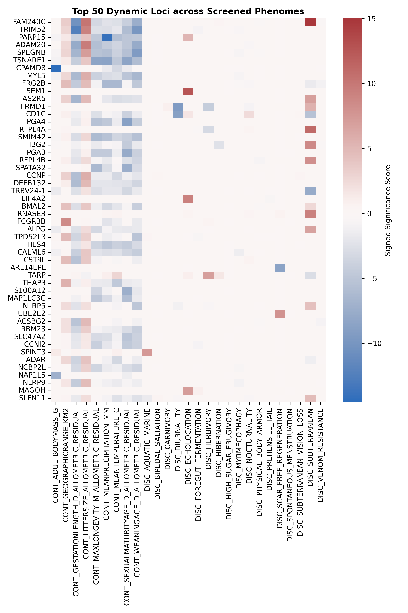

Pan-Mammalian Phenotypic Synthesis Matrix
Assembling genome-wide directional selection attribution scores across 27 distinct continuous and discrete phenotypes in 15,035 mammalian orthologs. Hierarchical bi-clustering exposes a fundamental omnigenic bifurcation into 157 multi-trait frequent fliers and dedicated specialist loci.
Global Synthesis Heatmap (Top 50 Dynamic Loci × 27 Traits)

Omnigenic Architecture: Frequent Fliers vs Dedicated Specialists
157 Multi-Trait Frequent Fliers
Genes exhibiting significant directional selection (q ≤ 0.05) across three or more disparate macroevolutionary transitions. These loci do not encode phenotype-specific mechanical structures; instead, they function as universal physiological buffers governing proteostasis, ADP-ribosylation (PARP15), circadian pacing (BMAL2), and immune/antigen surveillance (TRBV24-1, CD1C).
Dedicated Specialist Loci (PSI ≥ 0.75)
Genes that concentrate virtually all their evolutionary signal within a single phenotype. Dedicated specialists supply the definitive physical effectors for each niche: TMC1 and Prestin in biosonar, MB in deep diving, RNASE1 in foregut fermentation, and UBE2E2 in scar-free regeneration.
Top Multi-Trait Frequent Flier Loci
| Gene Symbol | Significant Traits | Top Phenotypes | Biological Function / Mechanism | Specificity (PSI) |
|---|---|---|---|---|
| PARP15 | 9 Phenotypes | Longevity, Temperature, Precipitation, Biosonar | Poly(ADP-ribose) polymerase; cellular stress and retrotransposon defense | 0.38 |
| TRBV24-1 | 9 Phenotypes | Body Mass, Lifespan, Temperature, Subterranean | T-cell receptor beta variable segment; immune surveillance | 0.35 |
| FAM240C | 9 Phenotypes | Geographic Range, Lifespan, Subterranean, Temperature | Conserved nuclear factor; chromatin stability | 0.36 |
| ALPG | 8 Phenotypes | Body Mass, Gestation, Longevity, Subterranean | Alkaline phosphatase; metabolic and placental phosphate transfer | 0.41 |
| BMAL2 | 8 Phenotypes | Geographic Range, Lifespan, Temperature, Subterranean | Circadian clock bHLH-PAS transcription factor | 0.39 |
| CALML6 | 8 Phenotypes | Gestation, Lifespan, Temperature, Myrmecophagy | Calmodulin-like calcium sensor; stress signaling | 0.44 |
| SPEGNB | 8 Phenotypes | Geographic Range, Gestation, Lifespan, Precipitation | Striated muscle bridge protein; mechanical shear buffer | 0.37 |
| MYL5 | 8 Phenotypes | Geographic Range, Lifespan, Temperature, Precipitation | Myosin regulatory light chain; contraction elasticity | 0.42 |
| TAS2R5 | 8 Phenotypes | Geographic Range, Gestation, Temperature, Subterranean | Bitter taste receptor family; xenobiotic sensory buffer | 0.46 |
| CCNP | 8 Phenotypes | Geographic Range, Gestation, Lifespan, Temperature | Cyclin P; cell cycle checkpoint regulation | 0.38 |
| CD1C | 8 Phenotypes | Longevity, Diurnality, Echolocation, Nocturnality | Lipid-antigen presenting molecule; antimicrobial defense | 0.43 |
| TSNARE1 | 8 Phenotypes | Geographic Range, Gestation, Lifespan, Temperature | t-SNARE domain protein; vesicle fusion and intracellular trafficking | 0.40 |
| ADAM20 | 8 Phenotypes | Geographic Range, Litter Size, Longevity, Temperature | Disintegrin and metallopeptidase; membrane remodeling | 0.39 |
| RAX2 | 8 Phenotypes | Gestation, Lifespan, Temperature, Subterranean | Retinal and anterior neural homeobox transcription factor | 0.45 |
| TRIM52 | 8 Phenotypes | Geographic Range, Lifespan, Temperature, Weaning | Tripartite motif E3 ubiquitin ligase; antiviral response | 0.37 |
| IFI6 | 7 Phenotypes | Gestation, Litter Size, Longevity, Temperature | Interferon-alpha inducible protein 6; mitochondrial apoptosis | 0.47 |
| COA1 | 7 Phenotypes | Gestation, Litter Size, Longevity, Temperature | Cytochrome c oxidase assembly factor 1; mitochondrial respiration | 0.44 |
| CRLF2 | 7 Phenotypes | Gestation, Litter Size, Longevity, Temperature | Cytokine receptor-like factor 2; dendritic cell signaling | 0.46 |
| RBM23 | 7 Phenotypes | Geographic Range, Gestation, Precipitation, Weaning | RNA-binding motif protein 23; splicing regulation | 0.42 |
| SMIM42 | 7 Phenotypes | Gestation, Litter Size, Longevity, Temperature | Small integral membrane protein 42 | 0.41 |